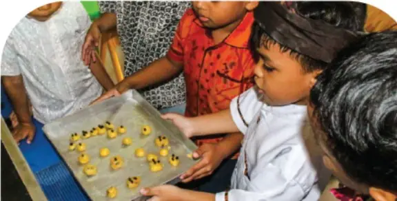
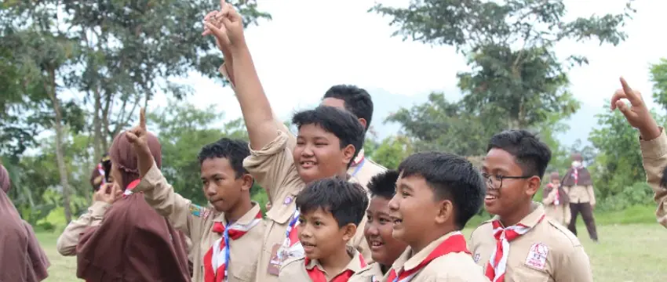
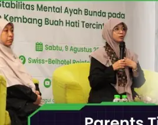

Academic Narrative
Academic material is packaged as real-life problem solving, so students also practise leading themselves and others.
The National Deep Learning Curriculum and Mutiara’s own B.E.S.T curriculum, taught across three accredited levels.
Deep Learning encourages students to understand lesson material deeply, not simply memorise it.
It builds critical thinking, problem solving, transfer of knowledge to new contexts, creativity and collaboration, so lessons become effective and open more room for discussion.
Developed within Mutiara’s education system to shape students who have character, are educated, solution-minded and skilled.
Students grow with excellent character in discipline, independence, devotion, integrity, nationalism and leadership.
Students become fast learners with broad knowledge and a visionary outlook, always curious and eager to try positive things.
Students become problem solvers for themselves, others and their community, able to lead and sensitive to the issues around them.
Students grow with life skills they will use to shape their lives and futures.
This programme focuses on reading, memorising and understanding the Qur’an with the Wafa method, a right-brain approach that is comprehensive, easy and fun. Lessons follow the 5P steps (opening, experience, teaching, assessment and closing) and use the hijaz melody. Targets: memorising the surahs of Juz 30 for preschool graduates, 3 juz for primary graduates and 2 juz for junior high graduates.

Playgroup (KB), Kindergarten A and B
Sentra, or Beyond Centres and Circle Time (BCCT), is an early childhood curriculum model designed by Pamela C. Phelps, Ph.D., in Florida, USA. Through the Sentra method, teachers provide a series of activities that support each child’s abilities according to their stage of development.



Kind words, cleanliness, discipline, responsibility, honesty, love of learning
Thematic knowledge, reading and writing, general knowledge, nature
Managing and expressing feelings, respecting others and the environment, confidence
Worship habits, daily prayers, reading and memorising Juz 30 of the Qur’an
Entrepreneurship, tolerance, social interaction, leadership
Communicating in two languages (English and Indonesian), getting to know today’s technology

Grades 1–6
Daily prayers, reading the Qur’an fluently, memorising hadith and daily prayers, Qur’an memorisation
The 5S culture (smile, greet, say hello, be polite and courteous), love of giving
Mastery in every subject and strong graduation results
Cleanliness, discipline, responsibility, love of learning
Using today’s technology and speaking English actively

Grades 7–9
Managing emotions and self-confidence
Awareness of prayer and Qur’an recitation, praying habits, Qur’an memorisation
Tolerance, entrepreneurship, active social interaction
Mastery in every subject and strong graduation results
Cleanliness, discipline, responsibility, kind words, leadership
Using today’s technology and speaking English actively
Signature Programmes
Academic material is packaged as real-life problem solving, so students also practise leading themselves and others.

Periodic activities to develop English actively and enjoyably, in collaboration with FEE Center (Future English Education Center).

Step-by-step training in logical, analytical and critical thinking, with the basics of scientific methods suited to each age.

Programmes that grow students’ love of reading and build literacy to strengthen skills and knowledge.

Leadership woven into lessons, extracurricular activities and student organisations, including OSIS and Scouts.

A learning space for parents about education and children, guided by parenting practitioners.
Message our team on WhatsApp for enrolment details, fees and school visits.
Enrol via WhatsApp